Predicting Employee Churn
Let’s look at predicting employee churn using Weka (Java based GUI tool – fast, easy to run and plenty of algorithms and data processing functionality.
Before we begin let’s focus on the goal/objective. Why are we doing this in the first place? We all know that retaining customers is less costly then obtaining new ones. In any case, customers will eventually leave and move on but the longer a customer stays with the company/ product; the more sales/profit for the company. This holds true for employees as well. It can get expensive to constantly train and hire new employees. Not only it costs companies, but there is also a risk of disrupting the business in the process. Now, some employee churn is okay and it may not be controllable but employers may find it useful to see what variables are driving high churn or what programs they can offer to prevent churn.
For business problems such as these- I tend to use the CRISP-DM methodology. The process starts from business understanding to data understanding to data preparation to modeling to evaluation to deployment.
The very first step should be to understand the problem at hand and make sure all the stakeholders are in alignment. If you are answering the wrong question or going after the wrong objective, then the outcome will be incorrect as well. Next comes the data understanding and data preparation- this will take majority of the time (at least 70% of the project) and one should be very comfortable on the features used in the data set. Once that is completed then it’s the modeling step- here one should experiment with various technique and make sure the model makes sense. Next comes the evaluation piece- where one should compare the performance of multiple models. One should also weight if model interpretability or model accuracy is more important. It may be difficult to explain your neural network result to c-level executives even if the model comes out to be 96% accurate. On the other hand, a decision tree model may work fine if it’s able to provide list of important features and it’s correct 92% of the time. Once, the evaluation step is done, think about how the model can be deployed in the production systems or how can the business use that information for future decision making. So many projects end up in a stage where they are not deployed and end up as a code on someone’s hard drive.
Enough of the preliminary stuff. Let’s dig into the HR data set using Weka.
Weka uses it’s own file type called .ARFF. This file type stores the meta data, any preprocessing work performed by the Weka and actual data all in one file.
Even though Weka prefers to use ARFF file types, we can still use .CSV to import the files initially and then save all preprocessing work in the ARFF file format once we are done.
Here, you can see that there are 14,999 observations, 10 features or attributes.
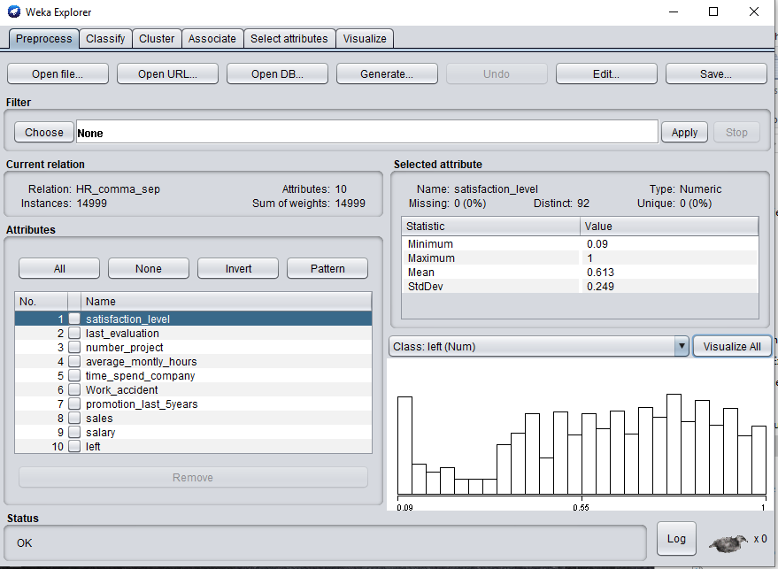
Let’s look at the visualization – click on “visualize all”
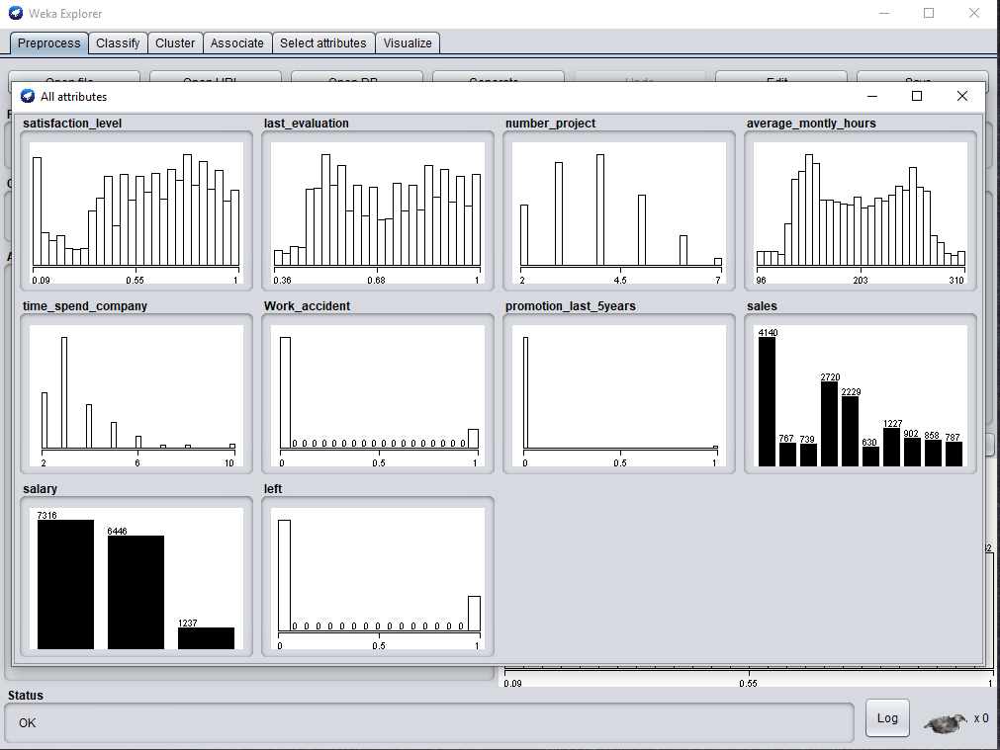
Few things to note here- work_accident, promotion_last_5_years and ‘left’ are all binary variables. Weka interpreted as numeric. ‘left’ attribute is what we are trying to predict- this should be class variable. Additionally, if you click on ‘left’- the attribute appears to be highly unbalanced (3,571 churned vs the remaining still employed). Time_Spend_company appears to be coming in as numeric- looking at the visualization it should be converted to nominal/ categorical value.
In the preprocess window, we can go thru each attribute and see basic stats such as: type, number and percent of missing, distinct values, if numeric then (min, max, mean, stdDev, if nominal then (count).
Make sure class variable is still selected as 'left'.
First, let’s convert numeric attributes to nominal. Filters > unsupervised > Attribute > NumericToNominal. Enter (5,6,7,10) in the attributeIndices.
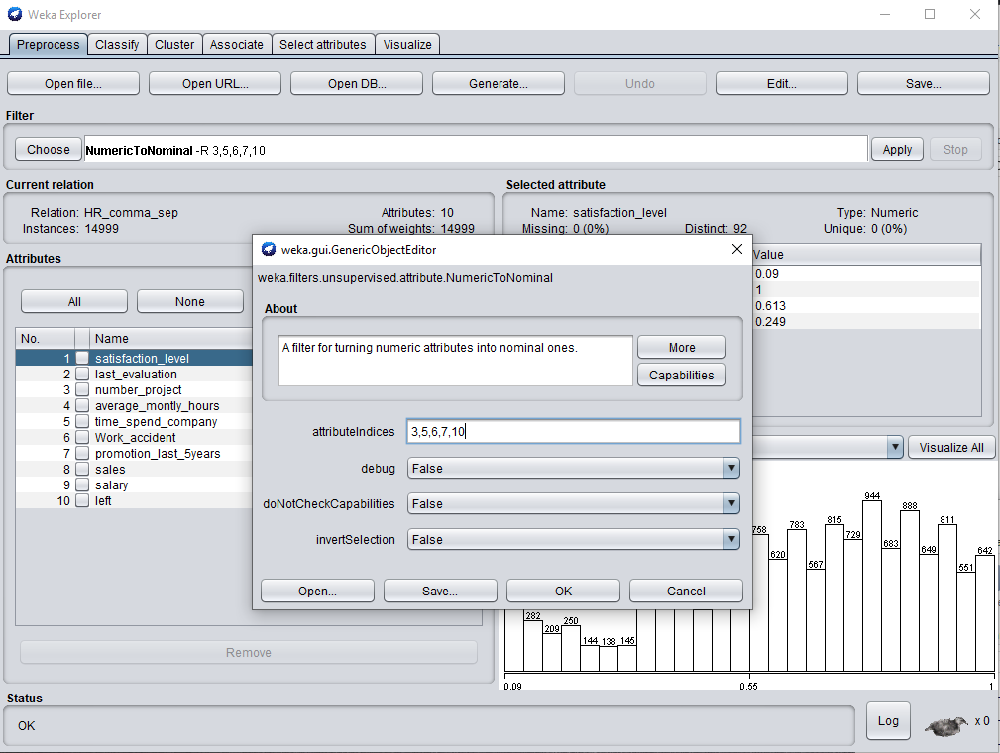
Next, lets take care for the class unbalanced issue. Filters > Supervised > Instance > SpreadSubSample. Enter 1 in the distributeSpread parameter.
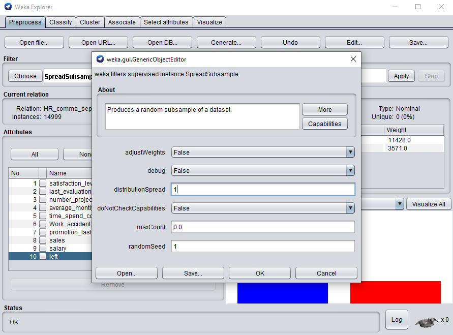
After applying the SpreadSubSample- lets look at the visualization to see if it worked.
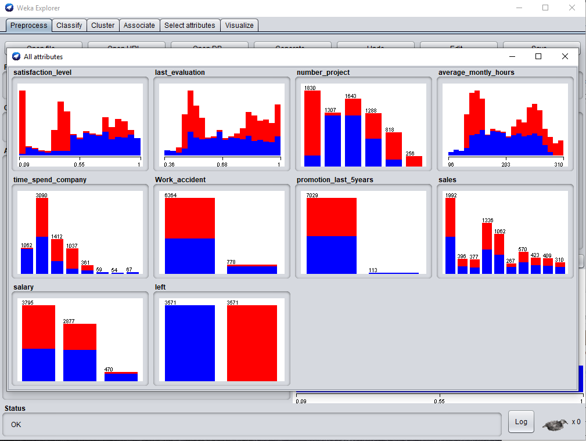
Everything looks good now. let’s shift to classify tab. Here, we can pick various classifiers and generate models. We will do 70/30 split 9meaning 70% training and remaining 30% validation).
Let's run the following:
J48 (Decision Tree)
SimpleLogistic
NaiveBayes
RandomForest
J48 (Decision Tree) Default settings:
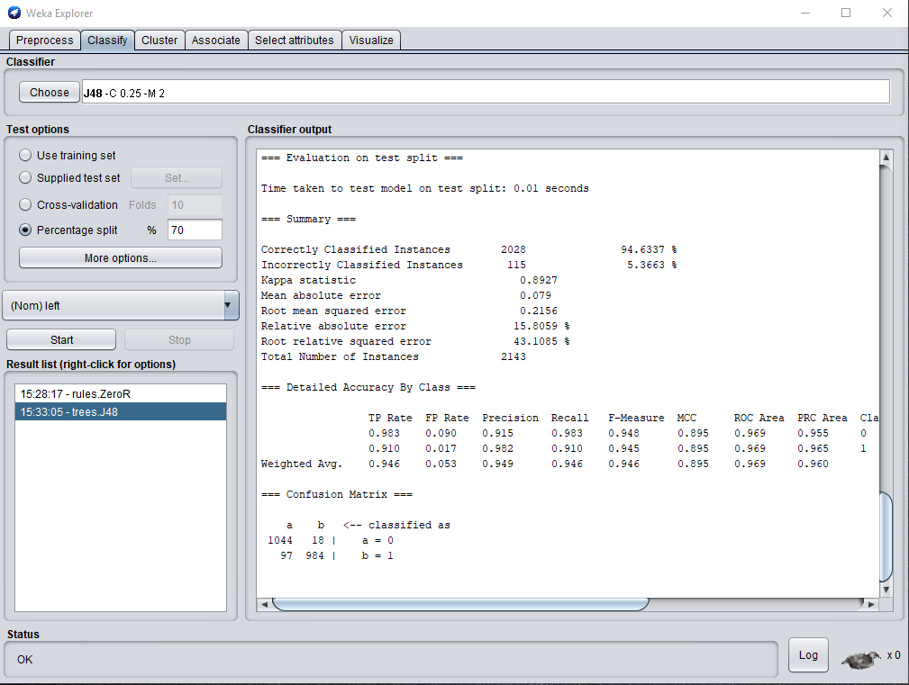
Decision tree model with default settings. 94.6% accuracy and 96.9 ROC.
Decision tree:
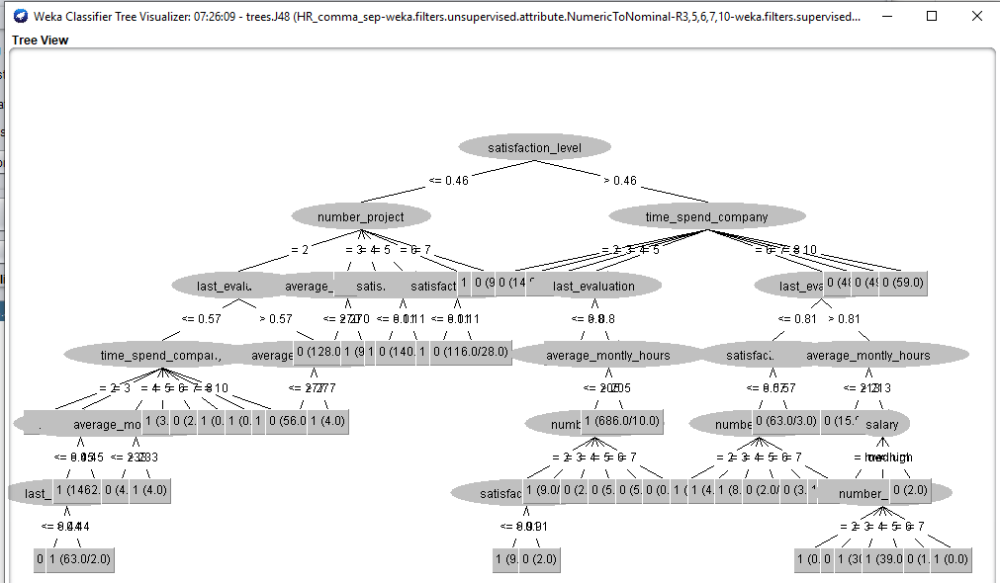
The default tree looks quite complex. Basically, it splits on satisfaction level. If the satisfaction level is less than or equal to .46, then it looks at number of projects. If the satisfaction level is more than .46 then it looks at time spend at company and splits further out. One thing we see all the way in the bottom are the leaf nodes where we see 1 (63.0/2.0) – all the to the left. This means that given all the if/else conditions above in the validation data set, that node was able to classify ‘left of 1’ correctly 63 of the 65 observations. Let’s create another version of the decision tree and change the minNumObj parameter to 50 instead of 2 and binary splits parameter = True. This increases minimum number of observations needed per leaf. This will decrease the complexity (i.e. make the tree bit smaller and easier to follow).
J48 (Decision Tree) MinNumPbj (50) and binarySplits (True):
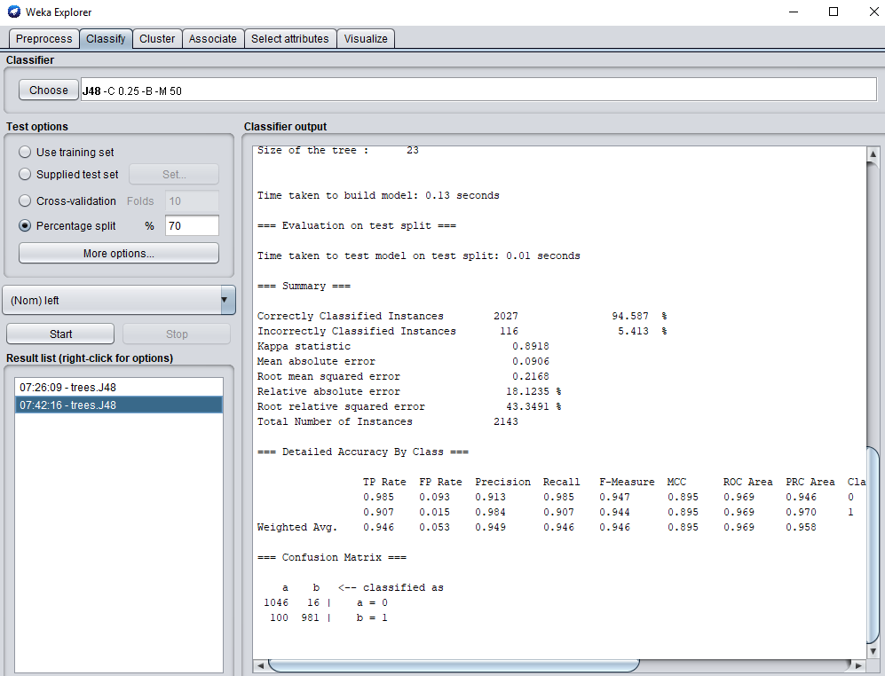
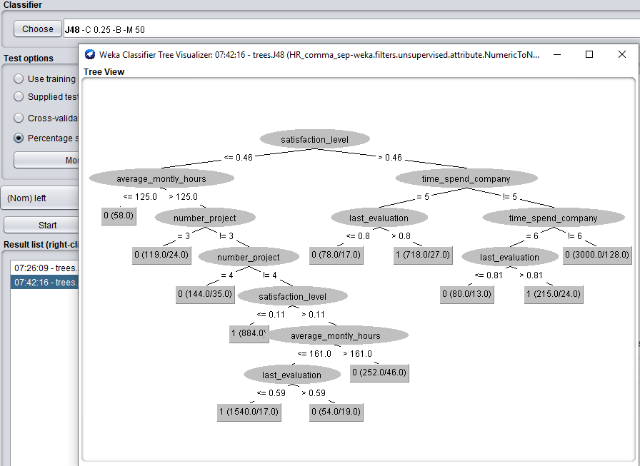
Decision tree model with MinNumPbj (50) and binarySplits (True). 94.5% accuracy and 96.9 ROC. Here we have simple tree without hurting accuracy and ROC.
SimpleLogistic:
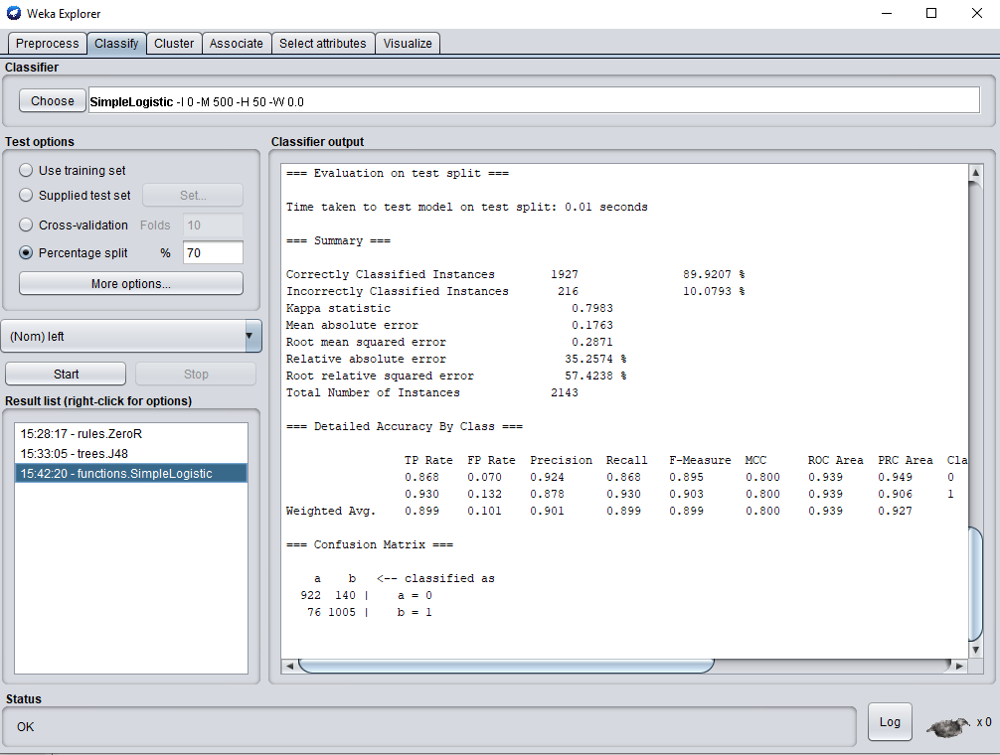
SimpleLogistic model with default settings. This algorithm uses a sigmoid function to provide a probabilistic value between 0 and 1 of whether the data item belongs to 'left' 1 or 0 89.2% accuracy and 93.9 ROC.
NaiveBayes:
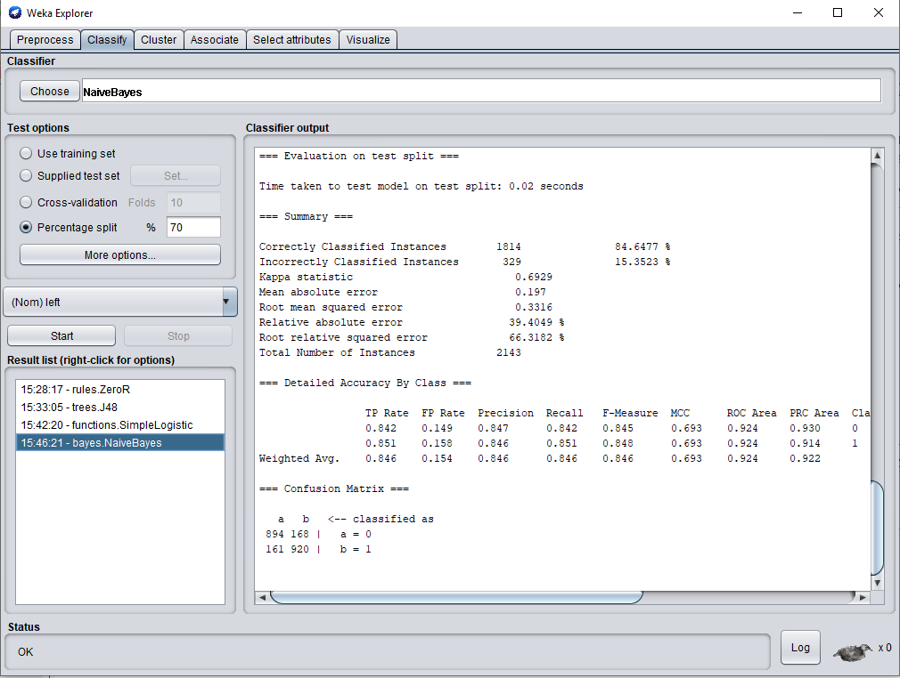
NaiveBayes model with default settings. Using Bayes’ Theorem to calculate the conditional probability of receiving the class label with respect to each attribute. 84.6% accuracy and 92.4 ROC.
RandomForest:
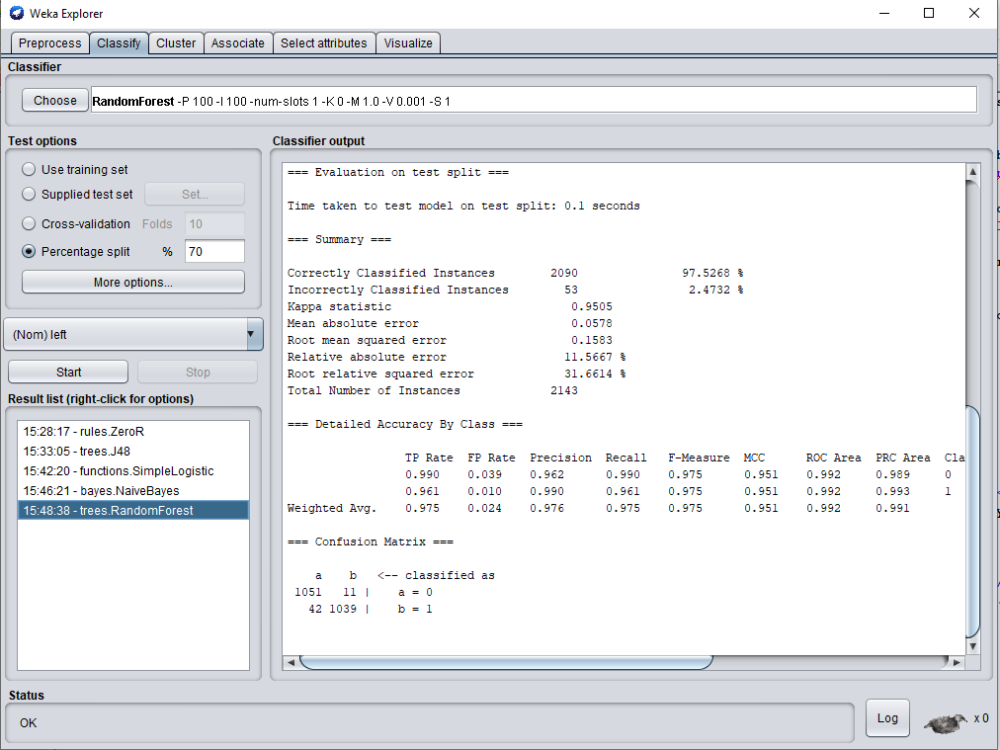
Random Forest model with default settings. Random Forest is an extension of bagging for decision trees that can be used for classification or regression 97.5% accuracy and 99.2 ROC.
Looks like random forest was best model in terms of accuracy and ROC metric. Some of the important attributes from this model are satisfaction level, number of projects and time_spend_company
Let’s save the model if we want to apply this to future data set. Ideally, next step would be to import a data set with new attributes (or current employees) without the “left” attribute and use the model to predict which employees will “leave”.
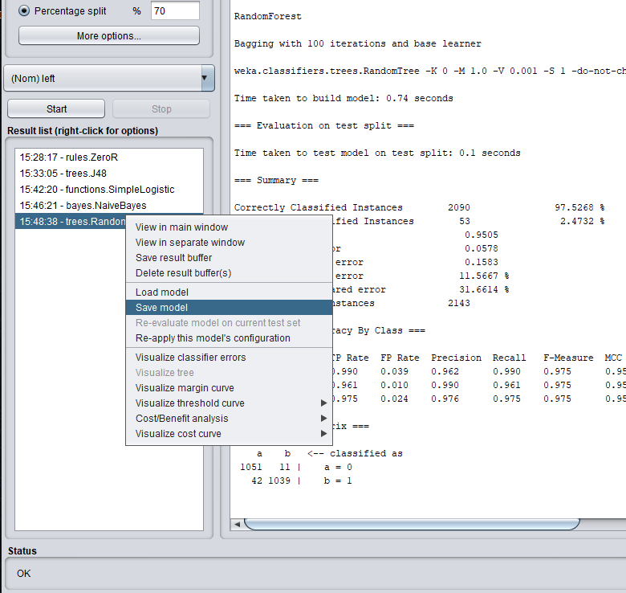
In summary- we looked at major steps in any predictive analytic project, imported HR churn data set, processed the data set, created 4 models, evaluated that the RandomForest was the best choice and lastly we saved the model for future use.
Overall, we have a fairly good predictive model on employee churn and this model can be used in the near future to score new set of employees with high accuracy.
Weka is a great open source tool which is great for small size data sets and organizations can get started with machine learning with little to no coding. The tool offers wide range of preprocessing tools and the ability to save the all those steps in an ARFF file format. The visualization piece is not that great though, but it does chew through data extremely well.
Here are reference links:
Link to WekaLink to kaggle data set
Crisp-DM-methodology